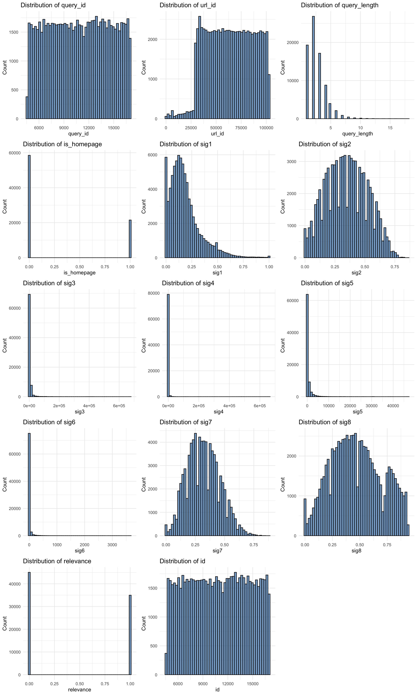
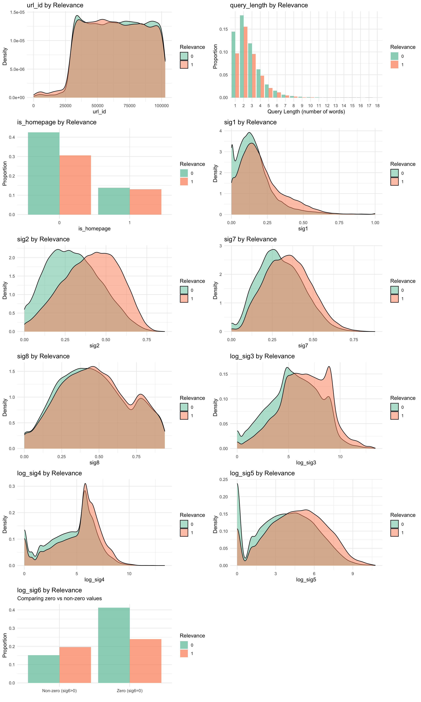
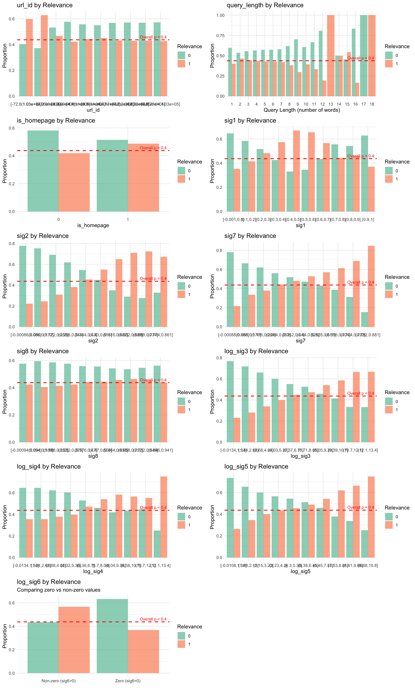
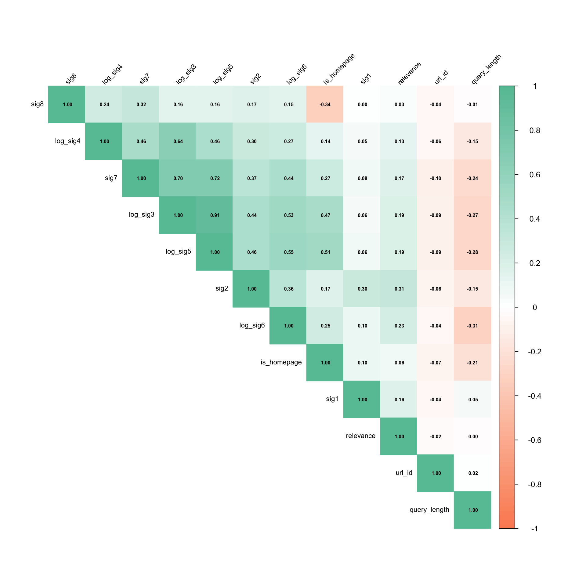

Stats 202 Analysis
Code
Selection
Summary
I conduct visualizations before preprocessing. Some initial data exploration shows: - The dependent variable is not imbalanced. - id and query_id are unique identifiers. - url_id is not clearly a unique identifier because the distribution of histogram buckets is not uniform. - is_homepage is a binary variable. - query_length is a count. - sig, sig3, sig4, sig5, sig6 are all highly skewed.
I remove unique identifiers (but not url_id, which is ambiguous at this stage) from the training data because they will over-fit the data.
I visualize the density of each predictor grouped by dependent variable. The overlay of the plots helps visualize whether the variable of interest is systematically higher for certain values of the predictors. To make the contrast more conspicuous, I log-transform the skewed variables. I also group predictor values into deciles and condition on the dependent variable.
For completness I investigate multicollinearity but find no significant \((|r| > .8)\) correlations. Variance inflation is also more germane to inference than to prediction; the point estimates with multicollinearity do not change even while standard errors increase.
Visualizations
Distributions of Variables
Histogram of Select Predictors Conditioned on Dependent Variable

Proportions (Bayes) of Select Predictors Conditioned on Dependent Variables Deciles

Correlation Plot

Pre-processing
I code is_homepage as an unordered factor.
I code query_length as an unordered factor as well. The decile visualizaiton revealed that the proportion of relevant variables does not increase linearly in query_length, and it is therefore appropriate to break the ordinal scale to accomodate unequal distances between each coutn level.
url_id will need to be handled differently. The numeric scale is not sensible but neither are factors, which would lead to over-fitting. Ultimately, it seems risky to include data that may be idiosyncratic, so I exclude it for conservatism.
There are no missing values.
Transformation
I do the following transformations:
- Log-transform skewed variables:
sig3, sig4, sig5, sig6. - Standardize all numeric variables in anticipation of using more flexible modeling strategies.
'data.frame': 80046 obs. of 10 variables:
$ query_length: Factor w/ 18 levels "1","2","3","4",..: 2 2 2 2 2 2 2 2 2 4 ...
$ is_homepage : Factor w/ 2 levels "0","1": 2 2 2 2 2 2 2 2 2 2 ...
$ sig1 : num -0.633 0.114 1.2 0.182 0.453 ...
$ sig2 : num -1.1414 0.0177 0.8291 0.5973 0.4234 ...
$ sig7 : num 1.014 0.797 0.148 0.869 0.581 ...
$ sig8 : num -0.527 -0.873 -1.175 -0.613 0.424 ...
$ relevance : int 0 1 1 1 1 0 0 1 0 0 ...
$ log_sig3 : num 0.481 0.998 0.425 0.811 0.493 ...
$ log_sig4 : num 0.494 0.475 0.533 0.627 0.58 ...
$ log_sig5 : num 1.32 1.85 1.42 1.37 1.82 ...